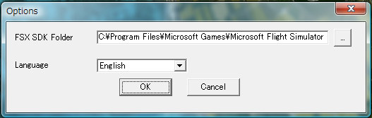

Setup
Download related tools
Download and setup related SDK tools from Microsoft site.
FS2000 Terrain SDK
Download FS2000 Terrain SDK from
HERE, then install it.
Note: Not recent Terrain SDK, but for FS2000.
If the link is invalid, go to Microsoft Flight Simulator -> "Article Index" -> "Flight Simulator 2000 SDK", and get the SDK.
Custom Terrain Texture SDK
Custom Terarin Textures SDK exists at
Flight Simulator 2002 Software Development Kits.
Download from
HERE, and install it.
Imagetool.exe included in this SDK is needed.
Setup option
Start up the Photo Scenery Maker, select "Option" menu, and setup the options.

- "Terrain SDK folder" : Specify FS2000 Terrain SDK program folder contains resample.exe, tmf2bgl.exe etc.
- "Imagetool folder" : Specify Custom Terrain Textures SDK program folder contains Imagetool.exe.
- "Language" : Specify your favorite language.